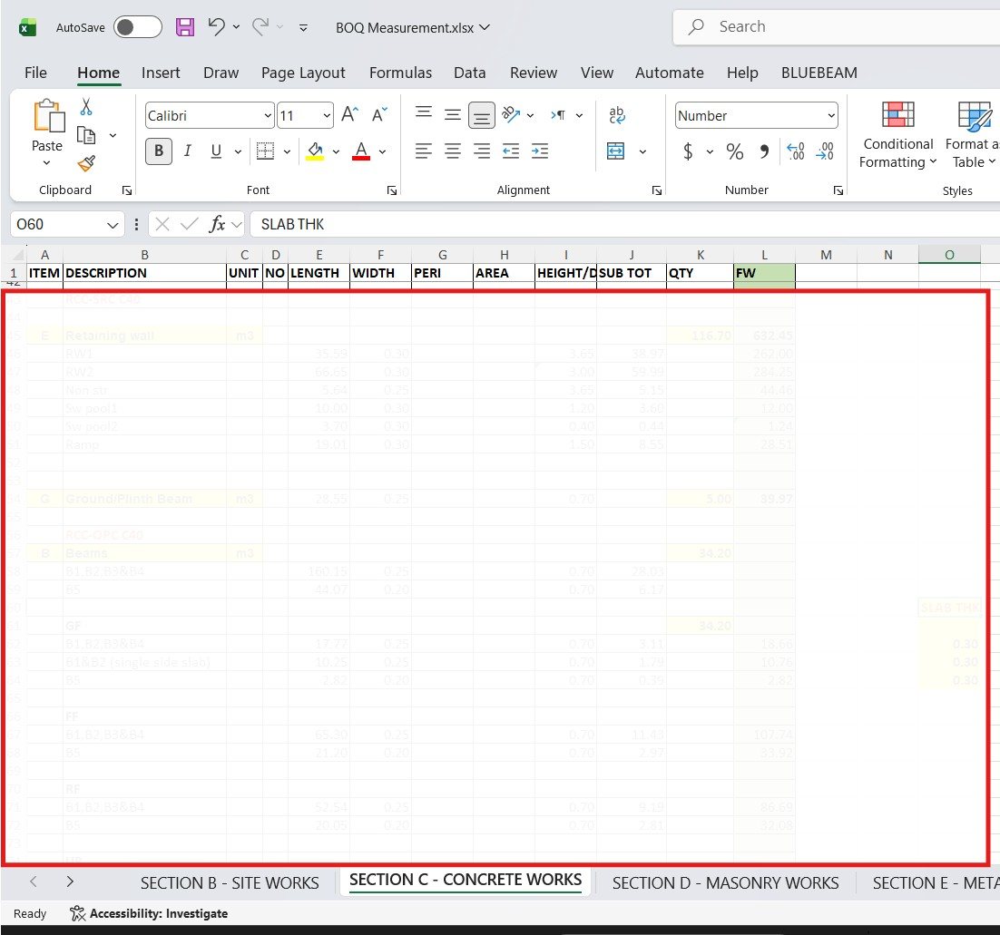

Sample Works & Documentation
BOQ extracts, quantity take-offs, and measurement samples

Civil Works BOQ Extract
Sample bill of quantities for reinforced concrete works including foundations, columns, beams, and slabs with unit rates.
Sample (anonymised) – available on request

MEP Services BOQ
HVAC, plumbing, electrical and fire fighting quantity take-off with measurement details and cost breakdown.
Sample (anonymised) – available on request

Quantity Take-off (Excel)
Detailed measurement sheet showing dimensions, calculations, and quantities in accordance with POMI rules.
Sample (anonymised) – available on request

AutoCAD Drawing Take-off
Marked-up architectural/structural drawing with dimension annotations and quantity references.
Sample (anonymised) – available on request

Interim Valuation Sample
Progress payment application showing measured works, retention, and net payable amount.
Sample (anonymised) – available on request

Variation Order Sample
Variation measurement, pricing, and impact assessment with before/after comparison.
Sample (anonymised) – available on request
These are representative samples. Full documents and additional samples available upon request.